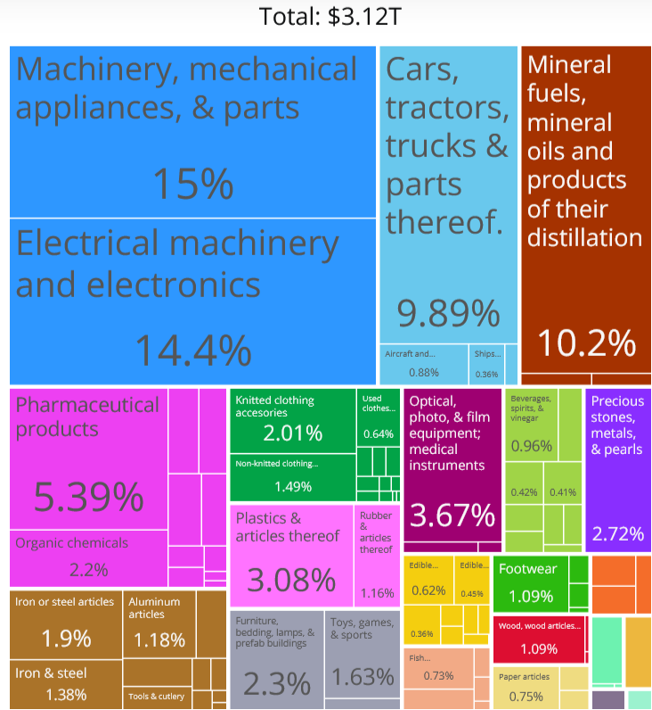
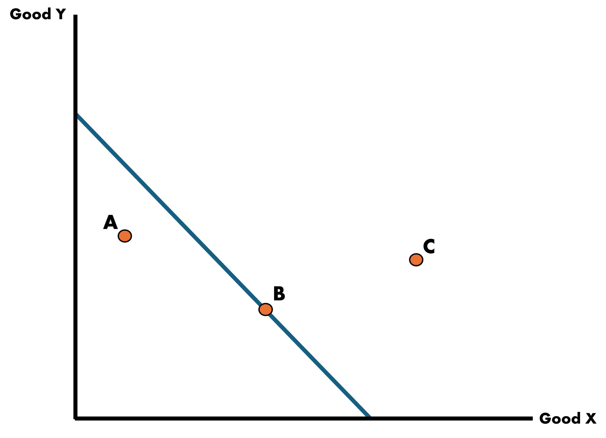
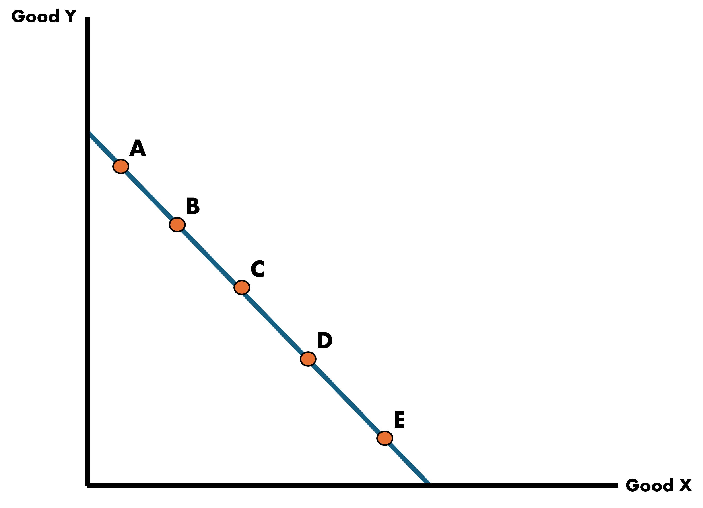
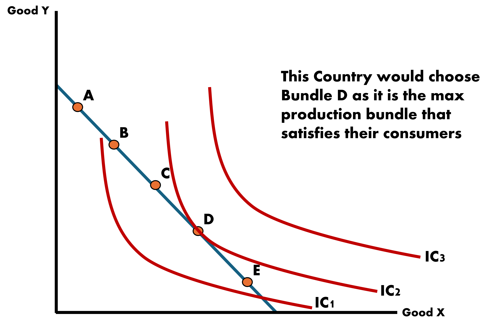
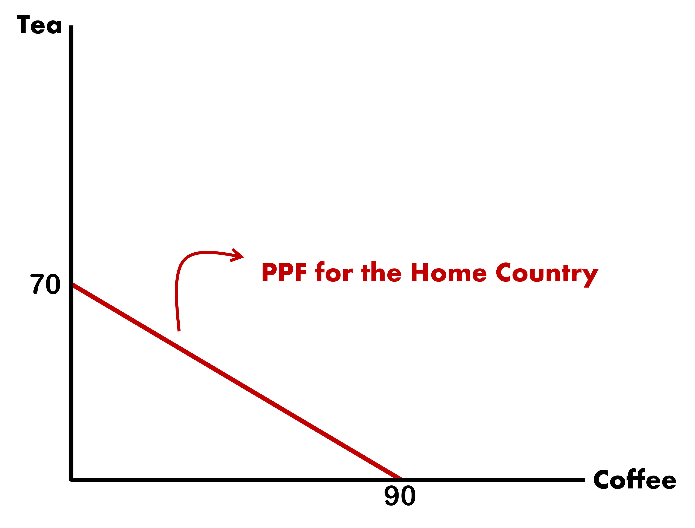

The Ricardian Model
EC 380 - International Economic Issues
2024
Why Trade?
Quick Recap
Why does trade occur? This is our main question.
There are two strands within the field of international trade:
I. Neoclassical Models of Trade (‘Old Theories’):
- Ricardian Model \(\Rightarrow\) Technology differences spur trade
- Hecksher-Ohlin Model \(\Rightarrow\) Resource differences spur trade
II. ‘New’ Trade Theory:
- Krugman Model \(\Rightarrow\) Demand/Want of variety spurs trade
- Melits Model \(\Rightarrow\) Heterogenous firms drive trade
US Imports Snapshot
In 2022, the US imported $316M in Toothbrushes.
Roughly 56% from China alone. Next noticeable sources are Germany, Switzerland, and India.
The US represents the largest economy in the world. But it still resorts to import of goods at a level that far exceeds what it exports.
As an example, while 99% of shipping containers that enter the Los Angeles port are fully loaded with goods, 70% of containers leaving the port are empty!
Imports

Exports

Reasons for Trade
With all the manufacturing capacity of the US, why not make toothbrushes at home and consume them domestically?
- Technology differences in each country?
- Total resources available differ by country?
- Production cost differences?
- Proximity to countries with more productive labor forces?
For now, let’s consider the opportunity cost of doing so. The Ricardian Perspective says that the US devotes domestic labor that would otherwise be used to produce these toothbrushes to comparatively more productive tasks.
Comparative Advantage
During the 16th and 17th century, the study of economics was in its infancy. Misguided beliefs in public policy were widely held across nations.
Mercantalism: A stockpile of gold and silver was considered an appropriate barometer for the state of the domestic economy
Imports \(\Rightarrow\) Less gold
Exports \(\Rightarrow\) More gold
Tariffs are set high to prevent trade deficits’
Ricardo would demonstrate that under balanced free trade (no tariffs), trade then benefits every country
Ricardo’s Logic
If every country exports the goods in which they have the comparative advantage in, then every country benefits from trade
Let’s view at an example
- Two countries: Portugal and England
- Two goods: Wine and Cloth
- Portugal has the absolute advantage in production of both goods
- England is particularly bad at making wine, which makes it relatively good at producing cloth
England has the comparative advantage in cloth. Portugal has the comparative advantage in wine.
Ricardo says that both are better off trading than under autarky
Autarky vs Trade
Autarky
Definition: The complete absence of foreign trade; total self-sufficiency of a national economy
To understand how trade affects national welfare, we have to understand how they do on their own
We can do this by looking at the Production Possibilities Curve (PPC)
- These show the trade-offs when a country chooses their production combination of two goods
- It is closely related to the opportunity cost of the good on the horizontal axis
Production Possibilities Curves (PPC)
For the moment, we will be dealing with PPCs that look like straight lines because we assume that the trade-off between two goods does not change
- This follows from an assumption we make on labor: Labor is homogeneous and no group of workers is more skilled than another group
How are they related to opportunity costs?
Opportunity costs are the best forgone alternative: In order to produce 1 unit of good X, the country has to give up some amount of good Y.
- Because this is a “rate of change”, we say that the slope of the PPC is the Opportunity Cost of good X
Production Possibilities Curves (PPC)
Country’s PPC Between X & Y

Production Possibilities Curves (PPC)
Country’s Bundle Choices Between X & Y

- Point A: Producing at an inefficient and wasteful level
- Point B: Efficient point of production where maximum level of output is obtained
- Point C: Infeasible. The country does not have the resources to produce at this level
How Does a Country Optimally Choose?

Choice depends on the country’s demand for the two goods
We call these Indifference Curves
Each curve shows the consumption bundles of goods that the economy can consume and be equally satisfied
The consumers are indifferent in its own preference across the bundles on a particular indifference curve
Indifference Curves
Back to the Ricardo Model
Starting with the Ricardo Model, we look at it’s primary components:
- Single Factor of Production (Labor)
- Two-Country Model (Home and Foreign)
- Technology differences across countries
We will use our own example
- Factor of production: Labor (L)
- Two Countries: Home and Foreign
- Two Goods: Coffee and Tea
- Suppose that in this case, the Home Country exports coffee and imports tea
- What would this imply about which good each country has comparative advantage in?
Ricardo Model Assumptions

Introducing some Key Variables - Marginal Product of Labor
Marginal Product of Labor (MPL): Represents the additional units of a good produced, given a one unit increase in the number of workers assigned to a particular task
The MPL for the Home Country for each good is written as \(\text{MPL}_{c}^{H}\) and \(\text{MPL}_{t}^{H}\), for coffee and tea respectively.
We can assign numbers to each such that:
\[ \text{MPL}_{c}^{H} = 9 \;\;\;\; \& \;\;\;\; \text{MPL}_{t}^{H} = 7 \]
Let’s also say that the country has a full labor force \(\bar{L} = 10\)
We will add the Foreign Country later
Home PPF
We can plot the Home PPF by finding the intercepts for each good. We can do this by multiplying the marginal product of labor by the workforce size
\[ \text{MPL}_{\text{good}}^{\text{country}} * \bar{L} \]
The Home Country produces
\[\begin{align*} Q_{\text{coffee}}^{H} &= 9 * 10 = 90 \\ \\ Q_{\text{tea}}^{H} &= 7 * 10 = 70 \end{align*}\]

Home PPF
Assume: PPF is a straight line due to the constant MPLs
Slope of PPF: Equal to the marginal rate of substitution between goods (Coffee & Tea)
\[ \text{Slope of PPF}^{H} = -\dfrac{\text{MPL}_{t}}{\text{MPL}_{c}} = -\dfrac{7}{9} \]
This is also the Opportunity Cost of coffee. So we can say that if we want one more unit of coffee we must trade off tea at a rate of \(-\dfrac{7}{9}\)
Equivalently, \(\dfrac{7}{9}\) units of tea (let’s think bags) is the opportunity cost of obtaining 1 more unit of coffee
Home Prices
We can determine prices in the country from this information as well. We assume to be under Perfect Competition which means that all goods are sold at cost.
Prices
These are in terms relative to both goods and measured in units:
\[ P_{c}^{H} = \dfrac{\text{MPL}_{t}}{\text{MPL}_{c}} = \dfrac{7}{9} \;\;\;\;\; \& \;\;\;\;\; P_{t}^{H} = \dfrac{\text{MPL}_{c}}{\text{MPL}_{t}} = \dfrac{9}{7} \]
Home Wages
We use the Perfect Competition assumptions to also determine wages
Wages
Workers are paid the equivalent of their MPL times the price of that additional unit they produce:
\[\begin{align*} \text{wages}_{\text{coffee}} &= \text{P}_{\text{coffee}} * \text{MPL}_{\text{coffee}} \\ \\ \text{wages}_{\text{tea}} &= \text{P}_{\text{tea}} * \text{MPL}_{\text{tea}} \end{align*}\]
Home Wages Across Industries
Additionally, because we assume that labor moves freely between industries, we can assume that wages are equalized across industries
\[ \text{wages}_{\text{coffee}} = \text{P}_{\text{coffee}} * \text{MPL}_{\text{coffee}} = \text{P}_{\text{tea}} * \text{MPL}_{\text{tea}} = \text{wages}_{\text{tea}} \]
We can rearrange this such that the price ratio is equal to the MPL ratio
\[ \dfrac{\text{P}_{\text{coffee}}}{\text{P}_{\text{tea}}} = \dfrac{\text{MPL}_{\text{tea}}}{\text{MPL}_{\text{coffee}}} \]
Foreign PPF, Prices, and Wages
We can find the Foreign Country results as well
Find them for yourself and we will pick it up next class. Let:
\[ \text{MPL}_{c}^{F} = 10 \;\;\;\;\; \& \;\;\;\;\; \text{MPL}_{t}^{F} = 12 \;\;\;\;\; \& \;\;\;\;\; \bar{L} = 10 \]
Tasks
- Graph the Foreign Country PPF
- Slope of \(\text{PPF}\)
- Opportunity Cost of coffee and tea
- Prices for both goods
- Who has the comparative advantage in producing coffee and why?
International Market Equilibrium
EC380, Lecture 01 | Ricardian Model